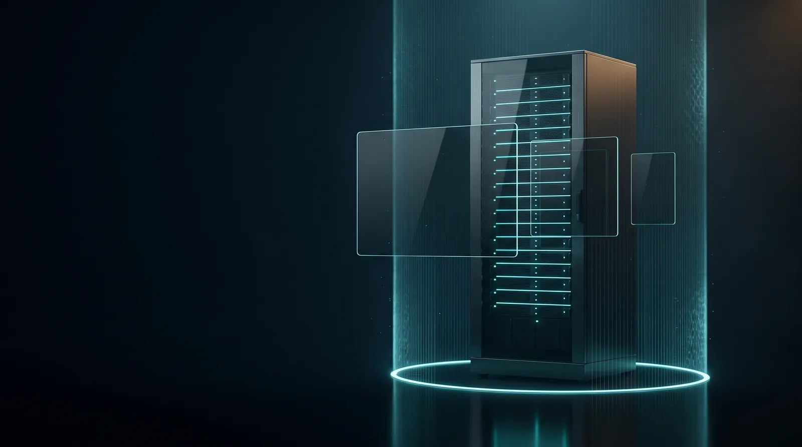
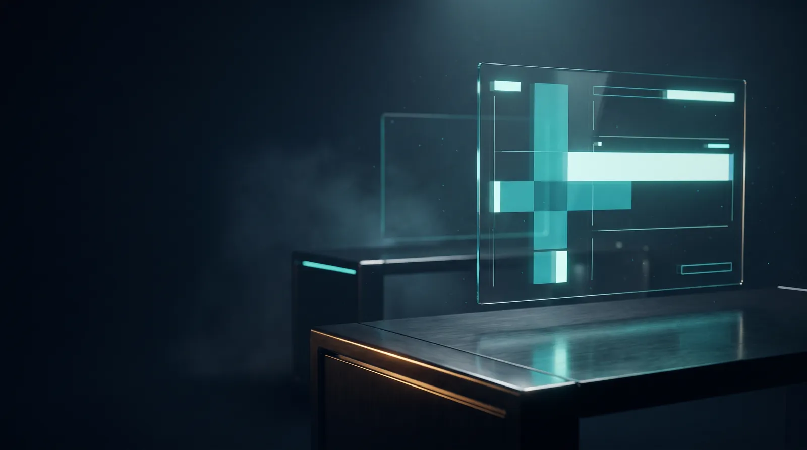
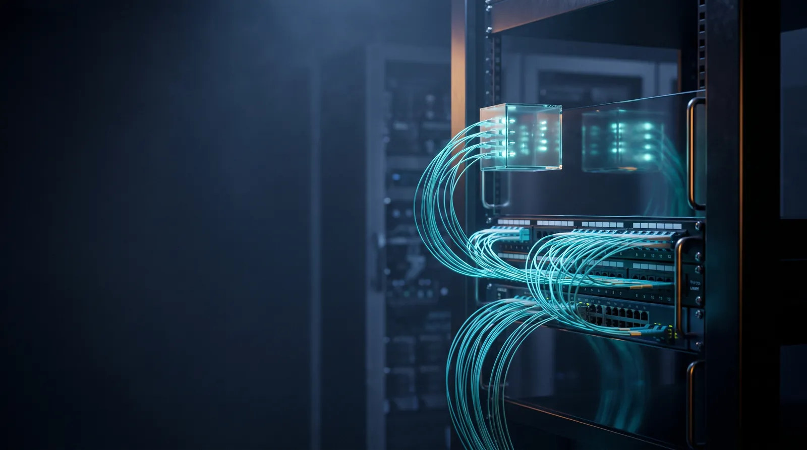
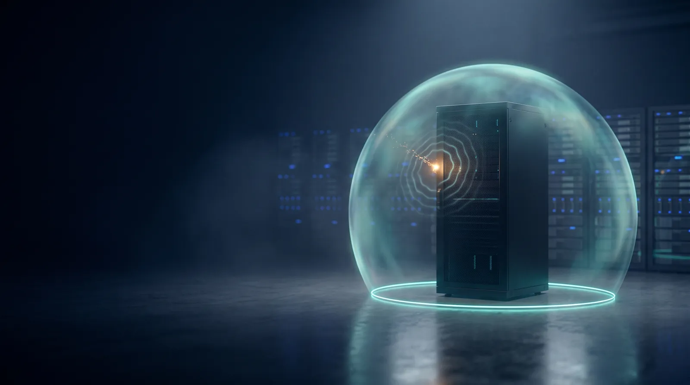
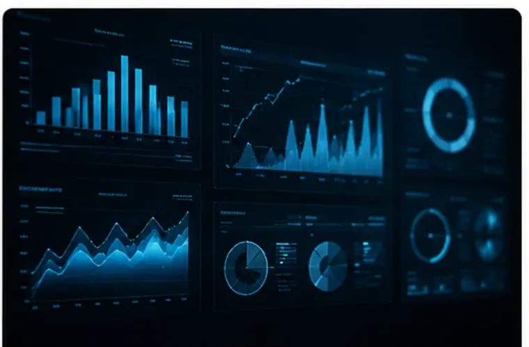
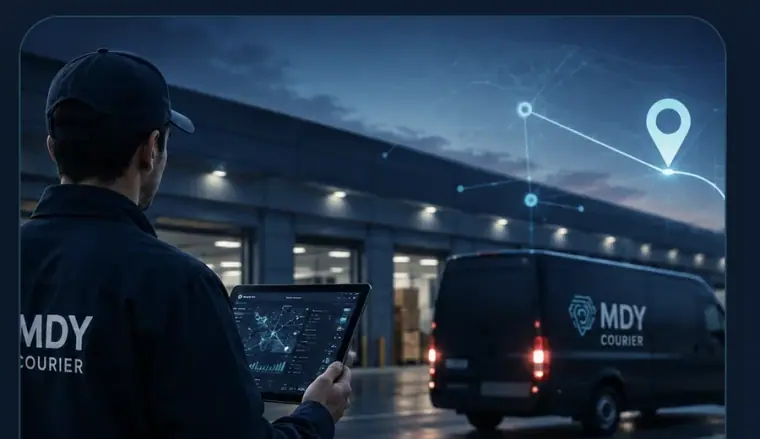
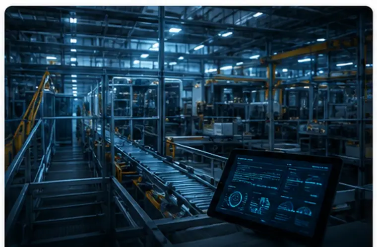
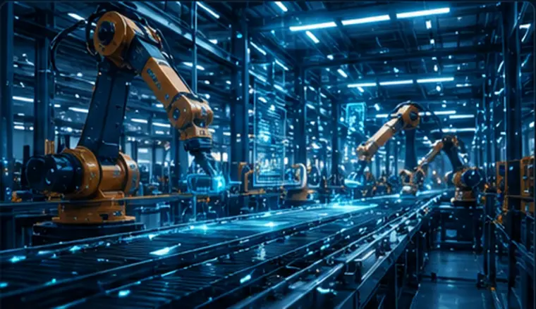
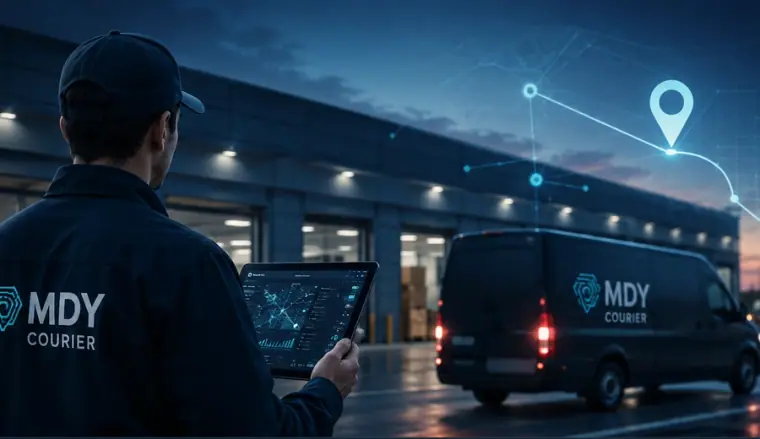

Soluții Software
Dezvoltăm și implementăm soluții software adaptate proceselor tale, de la ERP la portale pentru clienți.
Centrul de comandă al afacerii tale
ERP, producție, curierat și analiză într-un singur sistem, pe infrastructură administrată și securizată de MDY: date în timp real, servere stabile, riscuri sub control.

Echipe dedicate pe fiecare zonă de business: software, infrastructură și rețea, securitate cibernetică, suport și consultanță.
Sistemele lucrează împreună, iar informația circulă rapid între echipe, operațiuni și management.
Management comun al proiectului, de la consultanță strategică până la implementare, integrare și suport continuu.
Ecosistemul MDY
Software, arhitectură și date lucrează împreună, pe o infrastructură administrată și securizată. Alege o zonă sau lasă-le să ruleze.



Dezvoltăm și implementăm soluții software adaptate proceselor tale, de la ERP la portale pentru clienți.
Conectăm sisteme, procese și echipe într-un ecosistem unitar și sigur, cu date care circulă fără copy-paste.
Transformăm datele în decizii: rapoarte clare, automatizări și monitorizare, în loc de fișiere separate.
Prevenim, detectăm și oprim incidentele: perimetru, stații, e-mail și copii de siguranță testate.
Administrăm infrastructura zi de zi, cu monitorizare continuă, helpdesk și timpi de răspuns asumați.
Soluții
Software, infrastructură, securitate și operare IT, într-o arhitectură integrată, construită în jurul obiectivelor tale de business. Alege o direcție ca să vezi exact ce include.
Dezvoltăm, configurăm și integrăm soluții software adaptate proceselor reale din companie.
Construim și administrăm infrastructuri sigure și scalabile pentru aplicațiile și datele companiei.
Protejăm utilizatorii, sistemele și datele prin prevenție, detectare și răspuns continuu.

Monitorizăm, administrăm și menținem sistemele IT, cu suport rapid pentru echipa ta.
Software & Aplicații
Pornim de la activitatea zilnică și livrăm interfețe clare pentru oamenii care introduc, verifică, coordonează și analizează datele. Mai puține operațiuni manuale, date consistente și sisteme care lucrează împreună.
Infrastructură, Cloud & Rețea
Proiectăm și administrăm servere, virtualizare, servicii cloud, colaborare, rețea și backup pentru disponibilitate și control. Combinăm resurse locale, virtualizare și cloud în funcție de aplicații, securitate și continuitate.
Cyber Security
Securizăm infrastructura, rețeaua, utilizatorii și datele prin controale coerente, monitorizare și continuitate. Reducem expunerea, controlăm accesul și pregătim recuperarea, astfel încât incidentele să aibă un impact minim.
Managed IT, Suport & Consultanță
Monitorizăm, administrăm și menținem sistemele IT astfel încât echipele să lucreze stabil și să primească suport rapid. Prevenim problemele repetabile, intervenim la incidente și păstrăm infrastructura documentată și actualizată.
Produse MDY
Două platforme modulare dezvoltate de MDY, pentru curierat și pentru producție. Configurabile pe procesele companiei tale, cu module pe care le activezi când ai nevoie.

Software pentru curieratPlatformă pentru managementul operațiunilor de curierat: clienți, dispatch, arii curieri, colete, pickup, facturare, profitabilitate și raportare, într-un singur sistem.

Software pentru producțiePlatformă integrată (ERP operațional) pentru planificarea, monitorizarea și controlul producției. Conectează operațiunile, comenzile, stocurile, raportarea și fluxurile comerciale într-un singur sistem.
Industrii
Înțelegem specificul fiecărei industrii și dezvoltăm soluții adaptate proceselor de business.

Automatizare, trasabilitate, planificare și control operațional.
Managementul transporturilor, depozitelor și distribuției.

Soluții software pentru curierat și transport, optimizarea livrărilor și monitorizarea în timp real.
Digitalizarea proceselor interne și integrarea sistemelor.
Administrarea informațiilor și securizarea datelor.
Soluții pentru digitalizare, infrastructură și securitate cibernetică.
Cum lucrăm
Un proces coerent, cu decizii documentate și responsabilitate clară. Fiecare proiect începe cu înțelegerea obiectivelor de business și continuă cu proiectare, implementare, integrare și suport.
Inventariem sistemele, procesele, riscurile și dependențele, identificăm blocajele și stabilim ce înseamnă „rezultat” pentru compania ta.
Stabilim ce se schimbă, în ce ordine și cu ce impact asupra activității. Software, infrastructură, securitate și suport, gândite împreună.
Implementăm etapizat, integrăm aplicațiile, migrăm datele controlat și instruim echipa, fără să oprim activitatea.
Monitorizăm, întreținem și dezvoltăm soluția odată cu compania, cu suport local și adaptare rapidă la schimbări operaționale.
De ce MDY
Nu livrăm doar tehnologie, ci o abordare completă a digitalizării, de la consultanță strategică până la implementare, integrare și suport continuu. Un singur partener pentru software, infrastructură, rețea și securitate.
Tehnologii enterprise verificate în proiecte reale, combinate cu soluții noi acolo unde aduc un avantaj concret.
Producție, logistică, curierat, servicii, sănătate și sector public. Știm unde apar riscurile și cum le evităm din start.
Divizii dedicate pe software, infrastructură, securitate și suport, cu management comun al proiectului.
Oameni care cunosc sistemele tale și răspund repede, nu un call center generic.
Când procesele se schimbă, soluția se adaptează odată cu ele, nu devine un obstacol.
Din blogul MDY
De la phishing și ransomware la Golden Ticket, supply chain, injecții și amenințări interne.
Citește articolulUn checklist grupat pentru identitate, email, dispozitive, date, colaborare, monitorizare și recuperare.
Citește articolulUn proces practic pentru identificarea vulnerabilităților, prioritizarea riscurilor și construirea unui plan realist de remediere.
Citește articolulUrmătorul pas
Fie că ai nevoie de dezvoltare software, modernizarea infrastructurii IT sau o soluție completă de securitate cibernetică, MDY îți oferă expertiza și suportul necesare pentru a transforma cerințele tehnice în soluții sigure, eficiente și scalabile.
Software · Infrastructură · Securitate · Suport
Contact
Scrie-ne câteva rânduri despre proiect sau sună direct. Un specialist MDY revine cu următorii pași.